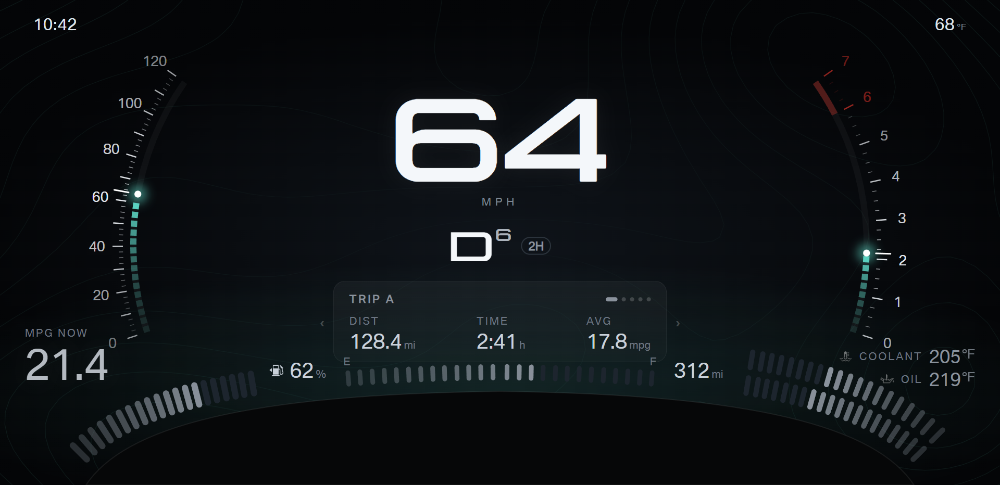
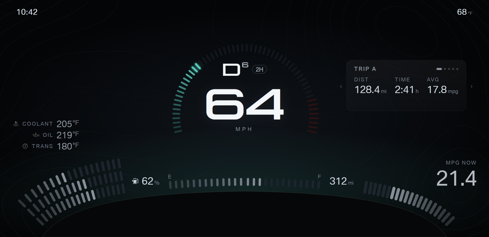
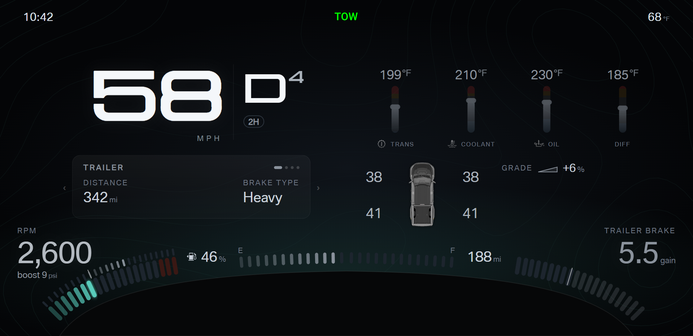
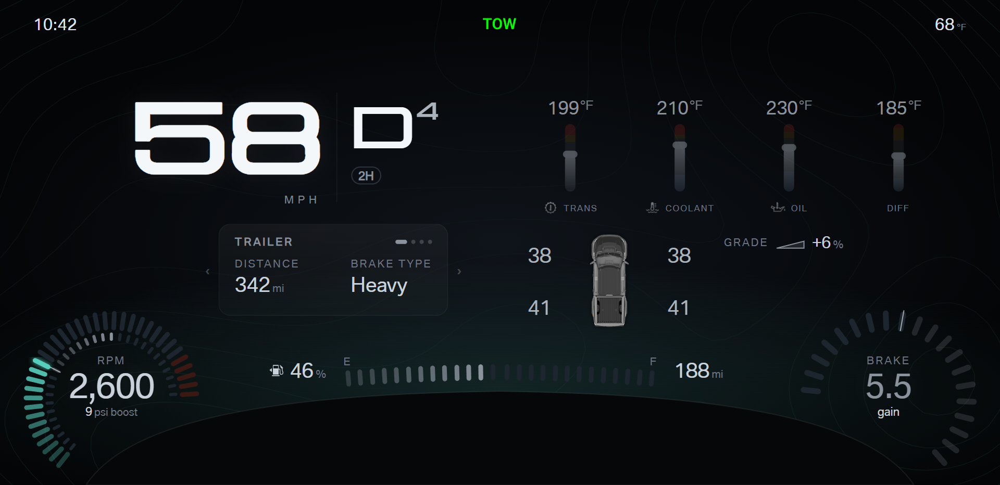

F150 cluster · Design round 10 · Fuel bottom center
Locked: towing uses fuel at bottom center (this round). Daily layouts keep fuel in the bottom-right corner from round 9.
The same layouts as round 9, with fuel at bottom center instead of the bottom-right corner. Compare the two rounds,
then pick the fuel position and A or B for each layout.
- Checked from the driver seat: the strip above the steering column cover is easy to see. The cover itself still hides the screen below y 752
(traced from the photo), so bottom center means the strip just above the cover.
- Fuel module: one line along the cover top. The level sits left of E, the band fills from E to F (left to right, as on a linear fuel gauge),
and the range sits right of F. Low fuel turns the line amber, and the low-fuel light turns the line red.
- The corner bands end at x 500 to leave room for the fuel line.
- Daily A option A: coolant and oil leave the crescents for the bottom-right corner (two bands and a value stack). Instant economy stays bottom left.
- Daily A option B: the right wing foot carries no band; the RPM scale ends there.
- Daily B option A: the card moves to the bottom right; the corner pocket under the card stays empty.
Daily B option B: instant economy takes the bottom-right corner, and the card keeps the upper right.
- Towing: the trailer brake returns to the bottom-right corner (round 8 form). Grade moves to the upper right.
Daily A · pick A or B
A · Economy left, temperatures right, fuel center

Daily B · pick A or B
B · Temperature fan left, economy right, fuel center

Towing · pick A or B
A · RPM and boost left, trailer brake right, fuel center

B · RPM dial left, trailer brake dial right, fuel center
